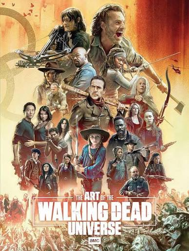
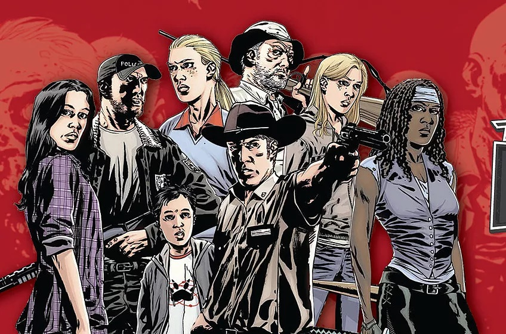

The walking dead teve sim seus altos e baixos,mas nunca deixou de ser uma série sobre pessoas sempre passou a mensagem como sempre deveria ser passada e tudo o que foi desenvolvido por cada roteirista que passou pela série merece ser lembrando sim! The walking dead em suas primeiras temporadas carregava uma ideia de que os zumbis deveriam ser inteligentes... Infelizmente essa ideia não foi para frente mas teria sido incrivel ver isso sendo desenvolvido nessa série!!! Me lembro quando afalecida esposa do Morgan tentou abrir a porta de sua casa pois se lembrava que morava ali, a cena dela olhando pelo olho magico da porta me arrepia até hoje!!! Bom... The walking dead foi uma das minhas séries favoritas e continuara sendo mesmo depois de tudo!!!